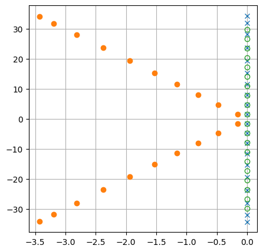
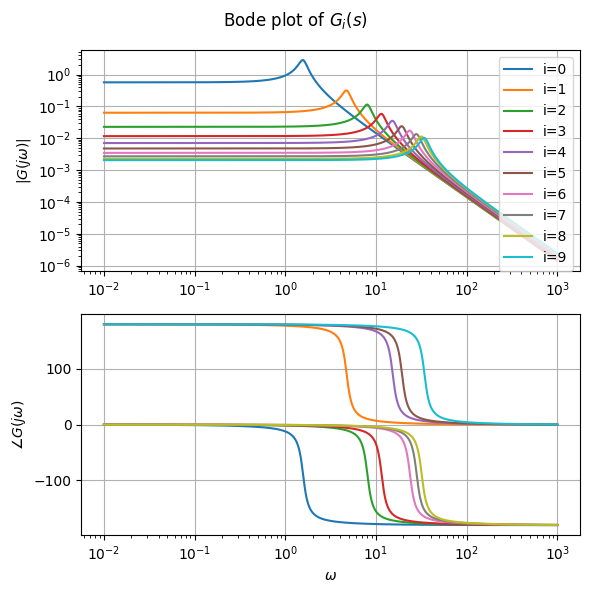
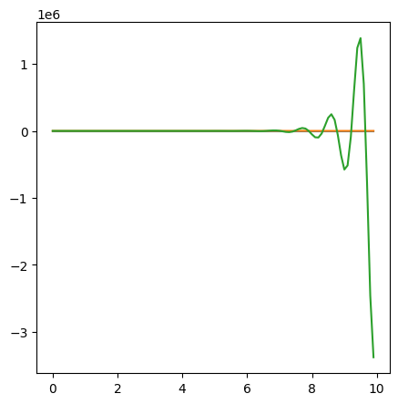
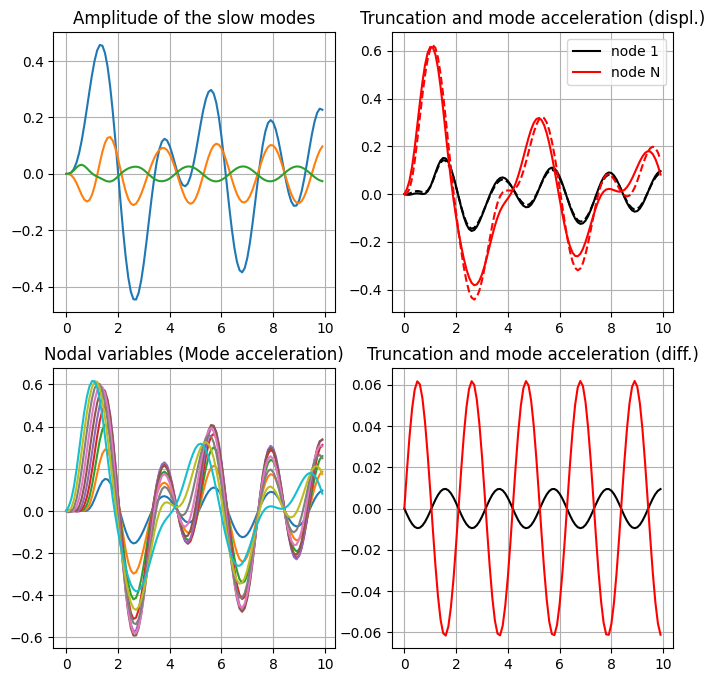
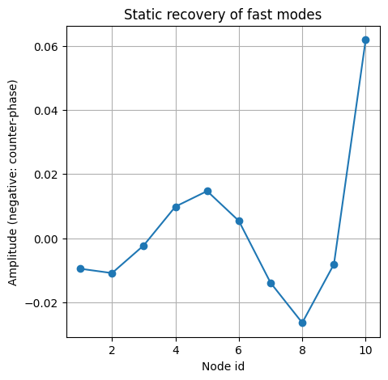

27.6. Time-integration of a mechanical system#
Reference to:
27.6.1. Example equation: torsion of elastic beam#
Here, the PDE governing the torsional dynamics of a linear homogeneous elastic beam is used as a toy problem
supplied with proper boundary and initial conditions. Here the clamped-free beam is studied, with prescribed torsional moment \(M(t)\) ath teh “free” end so that the boundary conditions read
See
27.6.1.1. Exact solution#
27.6.1.2. Finite element model#
Semi-discretized model in space
With the boundary conditions of the model, the FEM approximation of the problem becomes
import numpy as np
import matplotlib.pyplot as plt
from scipy.sparse import csr_matrix
def assemble_fem_matrices(L, N, I_coeff, GJ_coeff):
"""
Assembles Sparse Mass and Stiffness matrices for P1 Lagrange elements
based on 'Screenshot from 2026-05-14 18-59-39.png'.
"""
# Grid setup
nodes = np.linspace(0, L, N + 1)
h = L / N # element width
num_nodes = N + 1
# Local Element Matrices for P1 Lagrange
# Mass Matrix Local: (h/6) * [[2, 1], [1, 2]]
m_local = (I_coeff * h / 6.0) * np.array([[2.0, 1.0],
[1.0, 2.0]])
# Stiffness Matrix Local: (1/h) * [[1, -1], [-1, 1]]
k_local = (GJ_coeff / h) * np.array([[1.0, -1.0],
[-1.0, 1.0]])
# Global Assembly using COO format for efficiency
rows = []
cols = []
mass_data = []
stiff_data = []
for i in range(N):
# Indices for the current element (nodes i and i+1)
idx = [i, i + 1]
for r in range(2):
for c in range(2):
rows.append(idx[r])
cols.append(idx[c])
mass_data.append(m_local[r, c])
stiff_data.append(k_local[r, c])
# Convert to CSR (Compressed Sparse Row) format
M_sparse = csr_matrix((mass_data, (rows, cols)), shape=(num_nodes, num_nodes))
K_sparse = csr_matrix((stiff_data, (rows, cols)), shape=(num_nodes, num_nodes))
return M_sparse, K_sparse
def get_partitioned_matrices(L, N, I_coeff, GJ_coeff, dirichlet_indices):
# 1. Reuse the assembly logic to get global matrices
# (Assuming the assembly function from the previous step is defined)
M_global, K_global = assemble_fem_matrices(L, N, I_coeff, GJ_coeff)
num_nodes = N + 1
# 2. Define Node Sets
# Node 0 is Dirichlet (index 0), all others are Free
all_indices = np.arange(num_nodes)
free_indices = np.setdiff1d(all_indices, dir_indices)
# 3. Partitioning: Extract the FF block (Free-Free)
# This effectively removes the first row and first column
M_ff = M_global[free_indices, :][:, free_indices]
K_ff = K_global[free_indices, :][:, free_indices]
return M_ff, K_ff, free_indices
# Example parameters
L = 1.0 # Length of the domain
N = 10 # Number of elements
I_val = 1.0 # Inertia coefficient (from image)
GJ_val = 1.0 # Torsional stiffness (from image)
dir_indices = [0] # Dirichlet indices of the nodes with prescribed displacement
Mff, Kff, free_indices = get_partitioned_matrices(L, N, I_val, GJ_val, dir_indices)
# print(f"Mass Matrix Shape: {Mff.shape}")
# print(f"Mass Matrix (First 3x3 block):\n{Mff.toarray()[:3, :3]}")
# print(f"Stiffness Matrix (First 3x3 block):\n{Kff.toarray()[:3, :3]}")
# print(f"Sum(Mass Matrix): {np.sum(Mff.toarray())}")
27.6.2. Boundary conditions#
Matrix partition or augmented system.
27.6.2.1. Matrix partition#
Here the value of the kinematic variables \(\mathbf{x}_d\), and the actions \(\mathbf{f}_f\) is known. The unknowns are \(\mathbf{x}_f\) (the displacement of the free d.o.f.s of the system), and \(\mathbf{f}_d\) (the reactions at the constraints). Separating the unknowns from the known quantities,
This system is decoupled, as the reactions at the constraints are not involved in the dynamical systems for \(\mathbf{x}_f\), and thus they can be computed a posteriori.
27.6.2.2. Augmented system#
See the discussion about Poisson equation - i.e. the static version of the dynamical equation used here, with no inertia contribution - in Math: Numerical methods for PDEs
27.6.2.2.1. Spectral decomposition of the undamped system#
Eigenvalue problem focuses on the free response of the system, so all the forcing terms - both prescribed actions in \(\mathbf{f}_f\) and prescribed kinetic variables in \(\mathbf{x}_d\) - are set equal to zero. Thus, it’s possible to focus on the \(f\)-part of the partitioned system only, \(\mathbf{M}_{ff} \ddot{\mathbf{x}}_f + \mathbf{K}_{ff} \mathbf{x}_f = \dots\). In the following lines, pedices are dropped.
Either generalized eigenvalue problem of the undamped system as a second-order \(n\)-dimensional system
or the generalized eigenvalue problem as a first-order \(2n\)-dimensional system
Matrix symmetries and routines.
In the second-orded system, matrices of a mechanical system are usually symmetric. It’s possible to use the routine for Hermitian matrices \(\texttt{.eigsh()}\)
In the first-orded system, the augmented matrices are not symmetric. It’s not possible to use the routine for Hermitian matrices. Use the routine for general matrix \(\texttt{.eigs()}\) instead
Solution of the eigenvalue problem, and diagonalization - modal form. Routines returns mass normalized eigenvectors, so that
As the matrix form of the generalized eigenvalue problem reads \(\mathbf{M} \mathbf{V} \mathbf{S}^2 + \mathbf{K} \mathbf{V} = \mathbf{0}\).
Changing basis from “nodal” to “modal” variables, \(\mathbf{x} = \mathbf{V} \mathbf{q}\), and projecting on the eigenvectors, the dynamical equation becomes
For a mechanical system with definite positive \(\mathbf{M}\) and \(\mathbf{K}\), the eigenvalues of the system are imaginary so that \(s_i^2 = - \Omega^2_i\).
Show code cell source
import scipy as sp
#> Solve generalized sparse eigenvalue problem with symmetric matrices, s^2 M x + K x = 0
# evals, evecs = eigsh(A, k=6, M=None, which='LM', ...)
# for solving the A v = s M v problem
# k=number of evals, evecs computed. k < n (not possible to evaluate all the evals with this routine,
# but usually sparse matrix is used for large matrices, and one is not interested in the whole spectrum.
# For small matrices, either convert to full matrix or use this routine twice, one looking for SM and one for LM
# which='LM': largest magnitude, 'SM': smallest magnitude
evals_, evecs = sp.sparse.linalg.eigsh(Kff, k=N-1, M=Mff, which='SM')
#> Here evals^2 = - evals_
# evals are imaginary, \mp j \omega
evals = np.sqrt( -np.real(evals_) - 1j * np.imag(evals_) )
# print(f"First 3 Omega (rad/s): {np.abs(np.imag(evals[:3]))}")
# print("First 3 eigenvectors:")
# print(evecs[:,:3])
#> Run the routine twice to get eigenvalues with largest magnitude, and assemble them with the eigenvalues with smallest magnitude
#> If the full decomposition is required, just used the same routing twice: evaluate SM(k=kSM), and then
# evaluate LM(k=kLM), with kSM+kLM = N
#> As the routine is runned twice without sharing any info, apply normalization (if it's meaningful) later
# If kSM=N-1, then kLM=1 (without coincident eigvalues with largest magnitude), the eigenvectors could be already
# normal. By default the routine returns a mass-normalized eigenvectors
evals_lm_, evecs_lm = sp.sparse.linalg.eigsh(Kff, k=1, M=Mff, which='LM')
evals_lm = np.sqrt( -np.real(evals_lm_) - 1j * np.imag(evals_lm_) )
evals_all = np.block([evals, evals_lm])
evecs_all = np.block([evecs, evecs_lm])
# print(evals_all)
# print(evecs_all)
if ( np.max( evecs_all.T @ Mff @ evecs_all - np.eye(N) ) < 1e-9 ):
print("Mass-normalization of the eigenvectors within the tol\n")
else:
print("Mass-normalization of the eigenvectors not satisfied, or above the tol\n")
# print(evals_)
Mass-normalization of the eigenvectors within the tol
Show code cell source
I_sparse = sp.sparse.eye(N, format='csr')
Z_sparse = None
A = sp.sparse.bmat([
[ I_sparse, Z_sparse ],
[ Z_sparse, Mff ]
])
B = sp.sparse.bmat([
[ Z_sparse, -I_sparse ],
[ Kff, Z_sparse ]
])
#> Solve generalized sparse eigenvalue problem with non-symmteric matrices,
# which='xy', x: L(largest), S(smallest), y: M(magnitude), R(real part), I(imag part)
eevals, eevecs = sp.sparse.linalg.eigs(B, M=A, which='SM')
# print("First 3 pairs of eigenvalues:")
# print(evals)
# print("First 3 pairs of eigenvectors:")
# print(evecs[:,:6:2])
#> If the full decomposition is required, just used the same routing twice: evaluate SM(k=kSM), and then
# evaluate LM(k=kLM), with kSM+kLM = 2N
#> As the routine is runned twice without sharing any info, apply normalization (if it's meaningful) later
# If kSM=2N-2, then kLM=2 (without coincident pairs with largest magnitude), the eigenvectors could be already
# normal. By default the routine returns a mass-normalized eigenvectors
# evals, evecs = sp.sparse.linalg.eigs(B, k=4, M=A, which='LM')
# print(evals)
27.6.2.2.2. Modal structural damping#
See
Modal damping for the simultaneous diagonalization of mass, damping and stiffness matrices.
i.e. with
so that the damping matrix in “nodal” variables reads
The eigenvalues of the damped system, for \(\xi_i < 1\), become
Exact solution.
with boundary conditions
so that \(\cos \left( k \ell \right) = 0\), and thus \(k_n \ell = \frac{\pi}{2} + n \pi\), \(n \in \mathbb{N}\), i.e. the wave numbers of the modes are
Pulsations of the modes are
Show code cell source
#> Set structural damping, diagonal in modal basis
xi = .1
xi_all = np.ones(N) * xi
Om_all = np.imag(evals_all)
#> Damping matrix in nodal basis
Cff = evecs_all @ np.diag(2*xi_all*Om_all) @ evecs_all.T
Show code cell source
#> Comparing eigenvalues
# - damped discrete system
# - undamped discrete system
# - undamped continuous system (exact)
#> Exact eigenvalues
n_exact = N
om_exact_0 = np.pi / L * np.sqrt(GJ_val/I_val)
om_exact = om_exact_0 * ( .5 + np.arange(N) )
evals_exact = -1j * om_exact
evals_damped = Om_all * ( - xi_all - 1j * np.sqrt( 1 - xi_all**2 ) )
evals_undamped = - 1j* Om_all
evals_damped = np.concatenate([evals_damped, np.conj(evals_damped)])
evals_undamped = np.concatenate([evals_undamped, np.conj(evals_undamped)])
evals_exact = np.concatenate([evals_exact, np.conj(evals_exact)])
# print(Om_all)
# print(xi_all)
# print(evals_damped)
fig, ax = plt.subplots(1,1, figsize=(5,5))
ax.plot(np.real(evals_undamped), np.imag(evals_undamped), 'x')
ax.plot(np.real(evals_damped), np.imag(evals_damped), 'o')
ax.plot(np.real(evals_exact), np.imag(evals_exact), 'o', mfc='None')
# ax.set_aspect("equal")
# ax.set_xlim(-30,10)
# ax.set_ylim(-20,20)
ax.grid()
plt.show()
print(" Numerical evals Exact evals ")
print(" ------------------------------------- ")
for i in np.arange(N):
print(f"{np.real(evals_undamped[i]):8.4f}{np.imag(evals_undamped[i]):8.4f} i",
f"{np.real(evals_exact[i]):8.4f}{np.imag(evals_exact[i]):8.4f} i")

Numerical evals Exact evals
-------------------------------------
0.0000 -1.5724 i 0.0000 -1.5708 i
0.0000 -4.7561 i 0.0000 -4.7124 i
0.0000 -8.0571 i 0.0000 -7.8540 i
0.0000-11.5542 i 0.0000-10.9956 i
0.0000-15.3203 i 0.0000-14.1372 i
0.0000-19.4002 i 0.0000-17.2788 i
0.0000-23.7547 i 0.0000-20.4204 i
0.0000-28.1465 i 0.0000-23.5619 i
0.0000-31.9858 i 0.0000-26.7035 i
0.0000-34.3236 i 0.0000-29.8451 i
Eigenvalues of the first modes show a good match with the exact eigenvalues. For larger wave-number modes, the modes of the discrete system have higher frequencies than the modes of the continuous system: numerical approximation introduces “numerical constraints” (as it’s not capable of representing the exact solution, but only a system with a finite-number dofs), and thus makes the system “stiffer”: higher frequencies of the numerical eigenvalues agree with this intuition.
27.6.3. Response to a torsional moment at the “free” end#
With force at the free end, the forcing term of the discrete system reads
being the last node the free node. In modal variables
The input-output relation from the input \(M(t)\) and the \(N-1\)-dimensional output \(u_i\) reads
i.e. the transfer function between the torsional moment at the free end \(M(t)\) and the amplitude of the \(i^{th}\) mode is
import control as ct
F = np.zeros(N); F[-1] = 1.
omega_freq = np.logspace(-2, 3, 500)
fig, ax = plt.subplots(2,1, figsize=(6,6))
for i in np.arange(N):
#> Define the input-output relations with TF
num = [ evecs_all[:,i].T @ F ]
den = [ 1., 2. * xi_all[i] * Om_all[i], Om_all[i]**2 ]
sys = ct.tf(num, den)
#> Evaluate frequency response, to build Bode diagrams
mag_L, phase_L, omega_L = ct.frequency_response(sys, omega_freq)
#> Plots
#> Bode plots (first line) of L(s)
ax[0].loglog(omega_L, mag_L, label=f'i={i}')
ax[1].semilogx(omega_L, np.degrees(phase_L))
ax[0].set_ylabel(r"$|G(j\omega)|$") ; ax[0].grid()
ax[1].set_ylabel(r"$\angle G(j\omega)$"); ax[1].grid()
ax[1].set_xlabel(r"$\omega$")
ax[0].legend()
fig.suptitle(f"Bode plot of $G_i(s)$")
fig.tight_layout()
plt.show()

27.6.4. Time simulations#
Here different approaches are evaluated:
#> Forcing
omega_M = 3.
M_t = lambda t: np.sin(omega_M * t)
#> Splitting slow and fast modes
i_slow = np.searchsorted(Om_all / 3, omega_M)
print(i_slow)
#> Initial conditions at rest in the non-deformed configuration
u0 = np.zeros(N)
v0 = np.zeros(N)
#> Mode acceleration
u0_m_acc = u0 \
- sp.sparse.linalg.spsolve(Kff, F) * M_t(tvec[0]) \
+ evecs_all[:,:i_slow] @ np.diag( Om_all[:i_slow]**(-2) ) @ evecs_all[:,:i_slow].T @ F * M_t(tvec[0])
#> Initial conditions for the reduced (resolved, dynamic, slow) system
#> Truncation
qs0 = evecs_all[:,:i_slow].T @ Mff @ u0
dqs0 = evecs_all[:,:i_slow].T @ Mff @ v0
qs0_m_acc = evecs_all[:,:i_slow].T @ Mff @ u0_m_acc
#> Time vec
nt = 100
dt = .1
tvec = np.arange(nt) * dt
3
Mode acceleration and static recovery of fast modes.
Time integration of the slow part
First order system
Second order system
Explicit Euler.
sims = {}
def f_fun(t, z):
n = len(z)
n1 = int(n/2)
q, dq = z[:n1], z[n1:]
ddq = - Om_all[:i_slow]**2 * q - 2 * Om_all[:i_slow] * xi_all[:i_slow] * dq + evecs_all[:,:i_slow].T @ F * M_t(t)
return np.concatenate([dq, ddq])
z0 = np.concatenate([qs0, dqs0])
z = z0.copy()
ZZ = [ z.copy() ]
sims['Explicit Euler'] = { 'Z': [ ] }
for t in tvec:
z += dt * f_fun(t, z)
ZZ += [ z.copy() ]
ZZ = np.array(ZZ)
fig, ax = plt.subplots(1,1, figsize=(5,5))
ax.plot(tvec, ZZ[:-1,:3])
plt.show()

Runge-Kutta. Exploiting scipy.integrate.solve_ivp
from scipy.integrate import solve_ivp
print(tvec)
print(F)
print(sp.sparse.linalg.spsolve(Kff, F))
print(z0)
z0 = np.concatenate([qs0_m_acc, dqs0])
#> Slow-modes
sol = solve_ivp(
f_fun,
(tvec[0], tvec[-1]),
z0,
method='RK45',
t_eval=tvec,
# rtol=1e-6,
# atol=1e-9
)
#> Nodal variables and internal forces
u_trunc = np.bmat([ evecs_all[:,:i_slow], 0*evecs_all[:,:i_slow]]) @ sol.y
u_recov = np.outer(sp.sparse.linalg.spsolve(Kff, F), M_t(tvec)) \
- np.outer(evecs_all[:,:i_slow] @ np.diag( Om_all[:i_slow]**(-2) ) @ evecs_all[:,:i_slow].T @ F, M_t(tvec))
u_m_acc = u_trunc + u_recov
print(z0)
print(u_trunc[:,0])
print(u_recov[:,0])
print(M_t(tvec[0]))
[0. 0.1 0.2 0.3 0.4 0.5 0.6 0.7 0.8 0.9 1. 1.1 1.2 1.3 1.4 1.5 1.6 1.7
1.8 1.9 2. 2.1 2.2 2.3 2.4 2.5 2.6 2.7 2.8 2.9 3. 3.1 3.2 3.3 3.4 3.5
3.6 3.7 3.8 3.9 4. 4.1 4.2 4.3 4.4 4.5 4.6 4.7 4.8 4.9 5. 5.1 5.2 5.3
5.4 5.5 5.6 5.7 5.8 5.9 6. 6.1 6.2 6.3 6.4 6.5 6.6 6.7 6.8 6.9 7. 7.1
7.2 7.3 7.4 7.5 7.6 7.7 7.8 7.9 8. 8.1 8.2 8.3 8.4 8.5 8.6 8.7 8.8 8.9
9. 9.1 9.2 9.3 9.4 9.5 9.6 9.7 9.8 9.9]
[0. 0. 0. 0. 0. 0. 0. 0. 0. 1.]
[0.1 0.2 0.3 0.4 0.5 0.6 0.7 0.8 0.9 1. ]
[0. 0. 0. 0. 0. 0.]
[0. 0. 0. 0. 0. 0.]
[[0.]
[0.]
[0.]
[0.]
[0.]
[0.]
[0.]
[0.]
[0.]
[0.]]
[0. 0. 0. 0. 0. 0. 0. 0. 0. 0.]
0.0
fig, ax = plt.subplots(2,2, figsize=(8,8))
ax[0,0].plot(sol.t, sol.y.T[:,:3])
ax[1,0].plot(sol.t, u_m_acc.T)
ax[0,1].plot(sol.t, u_trunc.T[:, 0], color='black', ls='--')
ax[0,1].plot(sol.t, u_m_acc.T[:, 0], color='black', ls='-' , label='node 1')
ax[0,1].plot(sol.t, u_trunc.T[:,-1], color='red' , ls='--')
ax[0,1].plot(sol.t, u_m_acc.T[:,-1], color='red' , ls='-' , label='node N')
ax[1,1].plot(sol.t, u_recov.T[:, 0], color='black', ls='-')
ax[1,1].plot(sol.t, u_recov.T[:,-1], color='red' , ls='-')
ax[0,0].grid(); ax[0,0].set_title("Amplitude of the slow modes")
ax[1,0].grid(); ax[1,0].set_title("Nodal variables (Mode acceleration)")
ax[0,1].grid(); ax[0,1].set_title("Truncation and mode acceleration (displ.)")
ax[1,1].grid(); ax[1,1].set_title("Truncation and mode acceleration (diff.)")
ax[0,1].legend()
#> Amplitude of the static recovery of fast modes
# [ K^-1 - Us * diag( ( ms oms^2 )^-1 ) * Us.T ) * F
recov_ampl = sp.sparse.linalg.spsolve(Kff, F) - evecs_all[:,:i_slow] @ np.diag( Om_all[:i_slow]**(-2) ) @ evecs_all[:,:i_slow].T @ F
fig, ax = plt.subplots(1,1, figsize=(5,5))
ax.plot(np.arange(N)+1, recov_ampl, '-o')
ax.grid()
ax.set_title("Static recovery of fast modes")
ax.set_ylabel("Amplitude (negative: counter-phase)")
ax.set_xlabel("Node id")
#> Plot configurations for the first time-steps
# fig, ax=plt.subplots(1,1, figsize=(5,5))
# ax.plot(u_trunc[:,0:7])
plt.show()

